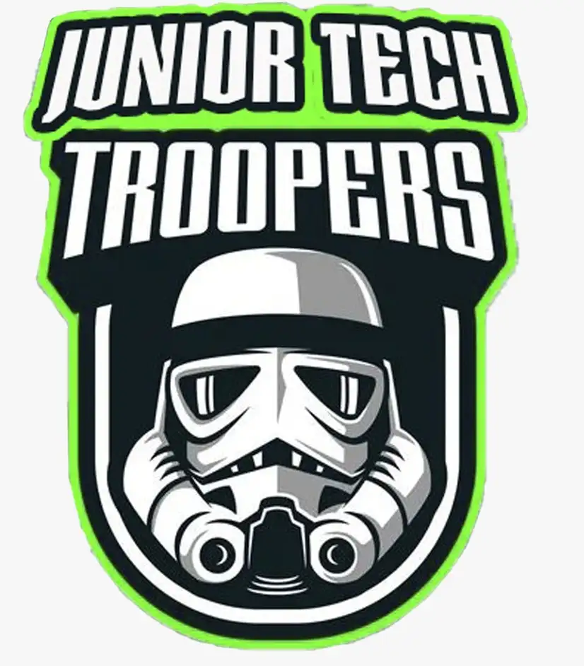

<div id="chat-bot-container" data-aos="zoom-in-up">
  <div class="chatbot-info-box">
      
      <h3>JUNIOR-GPT</h3>
      <p>"¡Hola, soy Han Solo! Soy un chatbot entrenado para responder todas tus preguntas sobre el proyecto de Python del grupo Junior Tech Troopers. Haz click en el botón de chatbot para comenzar"</p>
    </div>
  </div>